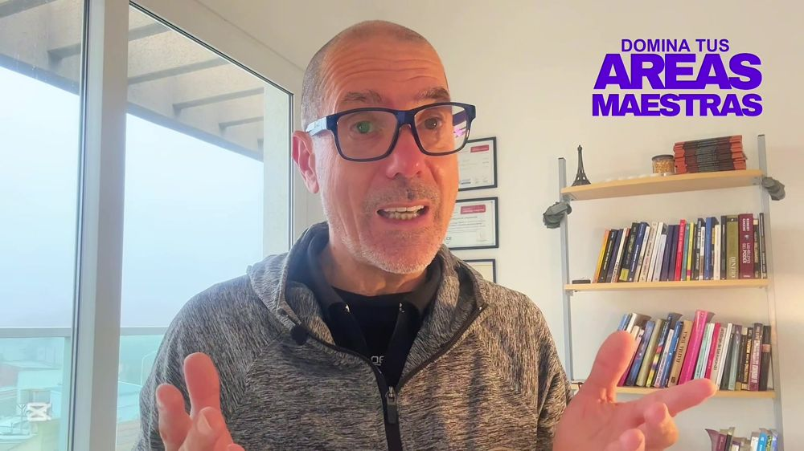

Cambiá tu vida
Mentoría + libros
Para quien está dispuesto a: cambiar su vida, sus vínculos, sus logros personales o su negocio / profesión
Quiero la mentoría →
BONUSTe muestro el paso a paso que hice yo para convertir mi experiencia en un negocio digital.

EN VIVO
Cómo convertir tu experiencia en unnegocio
digitalJorge Tapella
digitalJorge Tapella